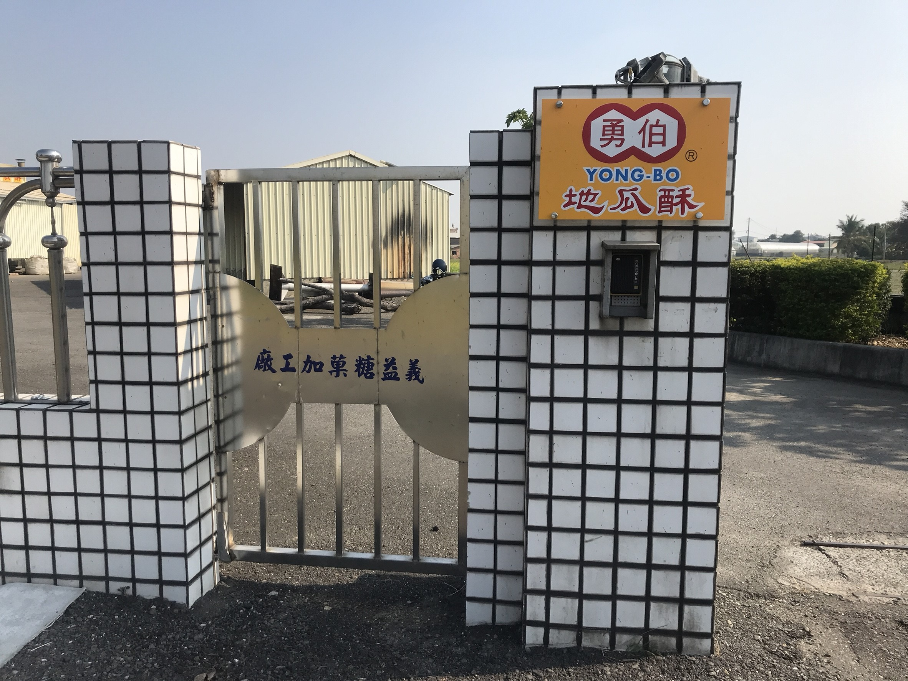
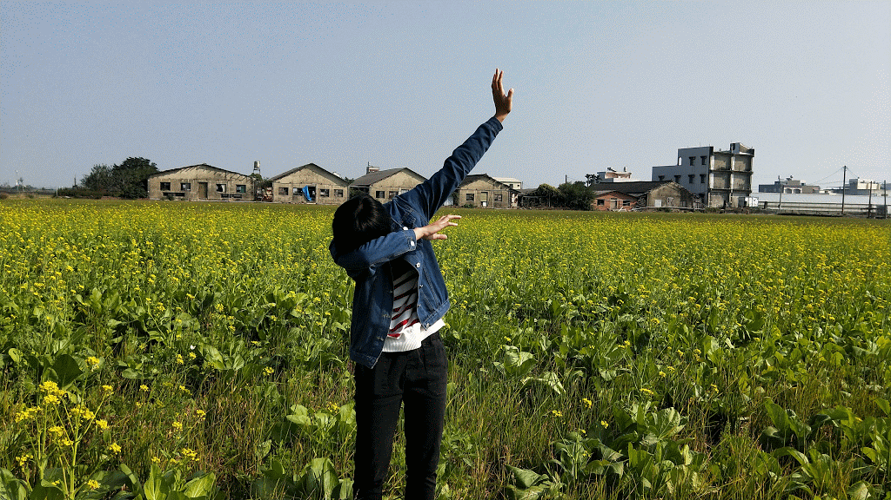
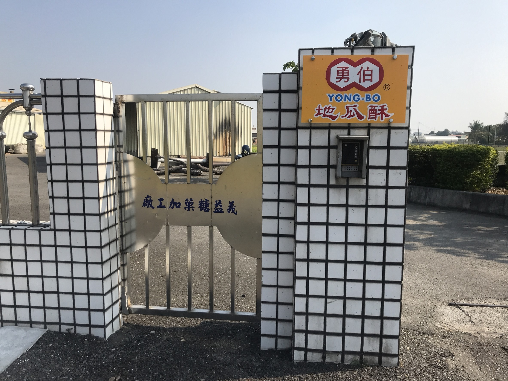
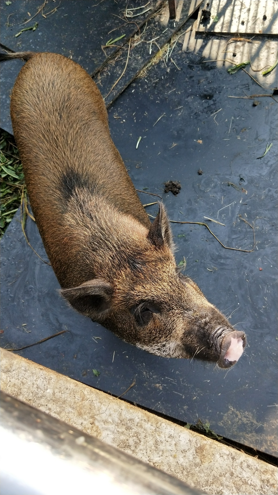

勇伯地瓜酥
當天我們去了勇伯地瓜酥的工廠，相信大家也有吃過勇伯品牌的地瓜酥，太保的勇伯地瓜酥工廠所賣 的地瓜酥比在超商買到的新鮮，而且價格也相對的便宜。
他們的地瓜酥有三種口味，分別是原味地瓜 酥，海苔地瓜酥，黑糖地瓜酥。吃起來非常的酥脆，會讓人吃不停口，根本就是看電視時的最佳食品 。這一種充滿古早味的店愈來愈少了，我們要好好珍惜，有時候這些小吃，是很多人們的回憶。 圖中的地瓜就是工廠所用到的地瓜原料，看到就想吃了，還不趕快去太保的工廠試試看新鮮的地瓜酥 ！！


當天我們去了勇伯地瓜酥的工廠，相信大家也有吃過勇伯品牌的地瓜酥，太保的勇伯地瓜酥工廠所賣 的地瓜酥比在超商買到的新鮮，而且價格也相對的便宜。
他們的地瓜酥有三種口味，分別是原味地瓜 酥，海苔地瓜酥，黑糖地瓜酥。吃起來非常的酥脆，會讓人吃不停口，根本就是看電視時的最佳食品 。這一種充滿古早味的店愈來愈少了，我們要好好珍惜，有時候這些小吃，是很多人們的回憶。 圖中的地瓜就是工廠所用到的地瓜原料，看到就想吃了，還不趕快去太保的工廠試試看新鮮的地瓜酥 ！！
後庄社區田園小路間竟然觀看到各種美麗花海，一片一片的，像是身處電影情景中，令人忍不住拍下這些景色，當天我們在繽紛的菊花旁停下腳步，仔細感受大自然的美好，這不像台北之前舉辦的花博，這裡的花非常自然，還有蜜蜂在採拾花蜜，之後我們也到了當地居民推薦的油菜花田中，望過去一片綠油油，人生就是要有這種體驗，舒適自由的感受讓我們到最後還不禁留連忘返呢！

當地有個地方設有山豬的家，但它不僅僅只是養豬，還利用豬廢水厭氣發酵沼氣產電引擎，把含有低甲烷的豬廢水產製成電力與肥料，還能讓豬舍不再臭氣沖天！
當天在後庄社區我們遇到很多友善的居民，花海和山豬的家都是他們推薦甚至帶我們到目的地，讓我們大開眼界，發現許多本來不知道的新天地！